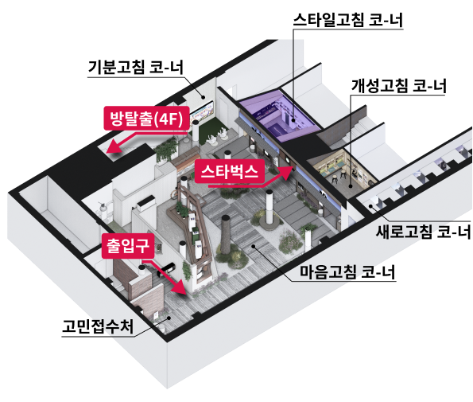

<!-- pop_store2 popup start -->

<section id="pop_store2" class="pop_store modal">
	<div class="popBg">
		<div class="popContent">
			<div class="popTitle_wrap">
				<h2>스타일고침 코-너</h2>
				<button onClick="popClose()" class="popup_close"></button>
			</div>
			<div class="con_store">
				<div class="con_store_top">
					
					<h4 class="con_store_title">소개</h4>
					<p>나만의 스타일로 새롭게 창조하는 공간<br />
						다양한 소품으로 패션을 리폼하고, <br class="mo_br" />
						리사이클링 팬던트로 DIY 팔찌도 만들 수 있답니다 
						</p>
				</div>
				<div class="con_store_bottom">
					<h4 class="con_store_title">위치</h4>
					<div class="con_store_imgs">
						<h5 class="store_floor">3F</h5>
						
					</div>
				</div>
			</div>
			<!-- 2022-10-24 버튼 변경 -> 모바일에서만 닫기버튼으로 노출 -->
			<div class="btn_wrap w100per tac">
				<button onclick="popClose()" class="btn_pop_full btn_primary btn mo_view">닫기</button>
			</div>
		</div>
	</div>
	<div class="dim"></div>
</section>
<!-- popup end -->